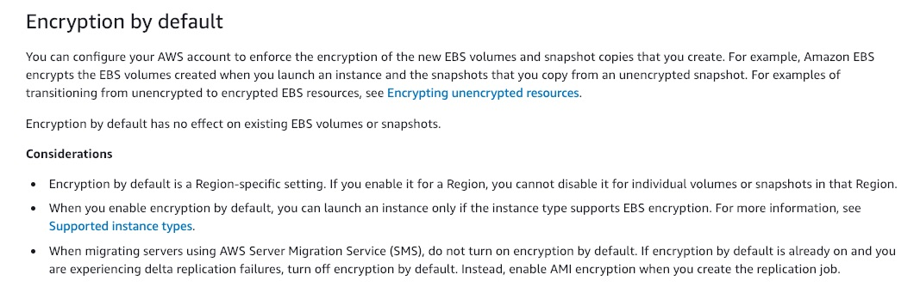

Amazon S3 supports object locking for concurrent updates - This is an incorrect statement. Amazon S3 does not currently support object locking for concurrent updates. Object locking is different from the S3 Object Lock feature. With S3 Object Lock, you can store objects using a write-once-read-many (WORM) model and prevent an object from being deleted or overwritten for a fixed amount of time or indefinitely.
Amazon S3 does not support object locking for concurrent writers. If two PUT requests are simultaneously made to the same key, the request with the latest timestamp wins. If this is an issue, you will need to build an object-locking mechanism into your application
Updates are key-based. There is no way to make atomic updates across keys. For example, you cannot make the update of one key dependent on the update of another key unless you design this functionality into your application.
A process writes a new object to Amazon S3 and immediately lists keys within its bucket. Until the change is fully propagated, the object might not appear in the list- This is a valid statement.
A process deletes an existing object and immediately tries to read it. Until the deletion is fully propagated, Amazon S3 might return the deleted data - This is a valid statement.
A process deletes an existing object and immediately lists keys within its bucket. Until the deletion is fully propagated, Amazon S3 might list the deleted object - This is a valid statement.
A company uses microservices-based infrastructure to process the API calls from clients, perform request filtering and cache requests using the AWS API Gateway. Users report receiving 501 error code and you have been contacted to find out what is failing.
Use X-Ray service - AWS X-Ray helps developers analyze and debug production, distributed applications, such as those built using a microservices architecture. With X-Ray, you can understand how your application and its underlying services are performing to identify and troubleshoot the root cause of performance issues and errors. X-Ray provides an end-to-end view of requests as they travel through your application, and shows a map of your application’s underlying components. You can use X-Ray to analyze both applications in development and in production, from simple three-tier applications to complex microservices applications consisting of thousands of services.
Use CloudTrail service - With CloudTrail, you can get a history of AWS API calls for your account - including API calls made via the AWS Management Console, AWS SDKs, command-line tools, and higher-level AWS services (such as AWS CloudFormation). This is a very useful service for general monitoring and tracking. But, it will not give a detailed analysis of the outcome of microservices or drill into specific issues. For the current use case, X-Ray offers a better solution.
A company uses Amazon RDS as its database. For improved user experience, it has been decided that a highly reliable fully-managed caching layer has to be configured in front of RDS.
Implement Amazon ElastiCache Redis in Cluster-Mode- One can leverage ElastiCache for Redis with cluster mode enabled to enhance reliability and availability with little change to your existing workload. Cluster mode comes with the primary benefit of horizontal scaling of your Redis cluster, with almost zero impact on the performance of the cluster.
When building production workloads, you should consider using a configuration with replication, unless you can easily recreate your data. Enabling Cluster-Mode provides a number of additional benefits in scaling your cluster. In short, it allows you to scale in or out the number of shards (horizontal scaling) versus scaling up or down the node type (vertical scaling). This means that Cluster-Mode can scale to very large amounts of storage (potentially 100s of terabytes) across up to 90 shards, whereas a single node can only store as much data in memory as the instance type has capacity for.
Install Redis on an Amazon EC2 instance - It is possible to install Redis directly onto Amazon EC2 instance. But, unlike ElastiCache for Redis, which is a managed service, you will need to maintain and manage your Redis installation.
Implement Amazon ElastiCache Memcached - Redis and Memcached are popular, open-source, in-memory data stores. Although they are both easy to use and offer high performance, there are important differences to consider when choosing an engine. Memcached is designed for simplicity while Redis offers a rich set of features that make it effective for a wide range of use cases. Redis offers snapshots facility, replication, and supports transactions, which Memcached cannot and hence ElastiCache Redis is the right choice for our use case.
Migrate the database to Amazon Redshift - Amazon Redshift belongs to "Big Data as a Service" cloud facility, while Redis can be primarily classified under "In-Memory Databases". "Data Warehousing" is the primary reason why developers consider Amazon Redshift over the competitors, whereas "Performance" is the key factor in picking Redis.
Create a high-resolution custom metric and push the data using a script triggered every 10 seconds
Using high-resolution custom metric, your applications can publish metrics to CloudWatch with 1-second resolution. You can watch the metrics scroll across your screen seconds after they are published and you can set up high-resolution CloudWatch Alarms that evaluate as frequently as every 10 seconds. You can alert with High-Resolution Alarms, as frequently as 10-second periods. High-Resolution Alarms allow you to react and take actions faster and support the same actions available today with standard 1-minute alarms.
Enable EC2 detailed monitoring - As part of basic monitoring, Amazon EC2 sends metric data to CloudWatch in 5-minute periods. To send metric data for your instance to CloudWatch in 1-minute periods, you can enable detailed monitoring on the instance, however, this comes at an additional cost.
Simply get it from the CloudWatch Metrics - You can get data from metrics. The basic monitoring data is available automatically in a 5-minute interval and detailed monitoring data is available in a 1-minute interval.
The contract states that monthly database backups must be retained for the duration of the contract for compliance purposes
Create a cron event in CloudWatch, which triggers an AWS Lambda function that triggers the database snapshot - There are multiple ways to run periodic jobs in AWS. CloudWatch Events with Lambda is the simplest of all solutions. To do this, create a CloudWatch Rule and select “Schedule” as the Event Source. You can either use a cron expression or provide a fixed rate (such as every 5 minutes). Next, select “Lambda Function” as the Target. Your Lambda will have the necessary code for snapshot functionality.
Incorrect options:
Enable RDS automatic backups - You can enable automatic backups but as of 2020, the retention period is 0 to 35 days.
Enable RDS Read replicas - Amazon RDS server's built-in replication functionality to create a special type of DB instance called a read replica from a source DB instance. Updates made to the source DB instance are asynchronously copied to the read replica. Read replicas are useful for heavy read-only data workloads. These are not suitable for the given use-case.
Enable RDS Multi-AZ - Multi-AZ allows you to create a highly available application with RDS. It does not directly help in database backups or retention periods.
enable detailed monitoring of the Amazon EC2 instances your team uses. As a Developer working on AWS CLI,
aws ec2 monitor-instances --instance-ids i-1234567890abcdef0 - You can enable detailed monitoring on an instance as you launch it or after the instance is running or stopped. Otherwise, basic monitoring is enabled. Syntax to enable detailed monitoring for an existing instance
aws ec2 run-instances --image-id ami-09092360 --monitoring Enabled=true - This syntax is used to enable detailed monitoring when launching an instance from AWS CLI.
Use Amazon Cognito for user-management and facilitating the log-in/sign-up process
Use Amazon Cognito to enable Multi-Factor Authentication (MFA) when users log-in
Amazon Cognito lets you add user sign-up, sign-in, and access control to your web and mobile apps quickly and easily. Amazon Cognito scales to millions of users and supports sign-in with social identity providers, such as Facebook, Google, and Amazon, and enterprise identity providers via SAML 2.0.
A Cognito user pool is a user directory in Amazon Cognito. With a user pool, your users can sign in to your web or mobile app through Amazon Cognito, or federate through a third-party identity provider (IdP). Whether your users sign-in directly or through a third party, all members of the user pool have a directory profile that you can access through an SDK.
Cognito user pools provide support for sign-up and sign-in services as well as security features such as multi-factor authentication (MFA).
Use Amazon SNS to send Multi-Factor Authentication (MFA) code via SMS to mobile app users- Amazon SNS cannot be used to send MFA codes via SMS to the user's mobile devices as this functionality is only meant to be used for IAM users. An SMS (short message service) MFA device can be any mobile device with a phone number that can receive standard SMS text messages. AWS will soon end support for SMS multi-factor authentication (MFA).
Can you help them understand what works for Amazon EBS encryption?
Encryption by default is a Region-specific setting. If you enable it for a Region, you cannot disable it for individual volumes or snapshots in that Region - You can configure your AWS account to enforce the encryption of the new EBS volumes and snapshot copies that you create. Encryption by default is a Region-specific setting. If you enable it for a Region, you cannot disable it for individual volumes or snapshots in that Region.

A volume restored from an encrypted snapshot, or a copy of an encrypted snapshot, is always encrypted- By default, the CMK that you selected when creating a volume encrypts the snapshots that you make from the volume and the volumes that you restore from those encrypted snapshots. You cannot remove encryption from an encrypted volume or snapshot, which means that a volume restored from an encrypted snapshot, or a copy of an encrypted snapshot is always encrypted.
Incorrect options:
You can encrypt an existing unencrypted volume or snapshot by using AWS Key Management Service (KMS) AWS SDKs - This is an incorrect statement. There is no direct way to encrypt an existing unencrypted volume or snapshot. You can encrypt an unencrypted snapshot by copying and enabling encryption while copying the snapshot. To encrypt an EBS volume, you need to create a snapshot and then encrypt the snapshot as described earlier. From this new encrypted snapshot, you can then create an encrypted volume.
A snapshot of an encrypted volume can be encrypted or unencrypted - This is an incorrect statement. You cannot remove encryption from an encrypted volume or snapshot, which means that a volume restored from an encrypted snapshot, or a copy of an encrypted snapshot is always encrypted.
Encryption by default is an AZ specific setting. If you enable it for an AZ, you cannot disable it for individual volumes or snapshots in that AZ - This is an incorrect statement. Encryption by default is a Region-specific setting. If you enable it for a Region, you cannot disable it for individual volumes or snapshots in that Region.
During a low utilization period, an entire Availability Zone went down and your application experienced downtime. What can you do to ensure that your application remains highly available?
Increase the minimum instance capacity of the Auto Scaling Group to 2 -
You configure the size of your Auto Scaling group by setting the minimum, maximum, and desired capacity. The minimum and maximum capacity are required to create an Auto Scaling group, while the desired capacity is optional. If you do not define your desired capacity upfront, it defaults to your minimum capacity.
Since a minimum capacity of 1 was defined, an instance was launched in only one AZ. This AZ went down, taking the application with it. If the minimum capacity is set to 2. As per Auto Scale AZ configuration, it would have launched 2 instances- one in each AZ, making the architecture disaster-proof and hence highly available.
Change the scaling metric of auto-scaling policy to network bytes - With target tracking scaling policies, you select a scaling metric and set a target value. You can use predefined customized metrics. Setting the metric to network bytes will not help in this context since the instances have to be spread across different AZs for high availability. The optimized way of doing it, is by defining minimum and maximum instance capacities, as discussed above.
Configure ASG fast failover - This is a made-up option, given as a distractor.
Enable RDS Multi-AZ - This configuration will make your database highly available. But for the current scenario, you will need to have more than 1 instance in separate availability zones to keep the application highly available.
You have a workflow process that pulls code from AWS CodeCommit and deploys to EC2 instances associated with tag group ProdBuilders. You would like to configure the instances to archive no more than two application revisions to conserve disk space.
Which of the following will allow you to implement this?
"CodeDeploy Agent"
The CodeDeploy agent is a software package that, when installed and configured on an instance, makes it possible for that instance to be used in CodeDeploy deployments. The CodeDeploy agent archives revisions and log files on instances. The CodeDeploy agent cleans up these artifacts to conserve disk space. You can use the :max_revisions: option in the agent configuration file to specify the number of application revisions to the archive by entering any positive integer. CodeDeploy also archives the log files for those revisions. All others are deleted, except for the log file of the last successful deployment.
AWS CloudWatch Log Agent - The CloudWatch Logs agent provides an automated way to send log data to CloudWatch Logs from Amazon EC2 instances. This is an incorrect choice for the current use case.
Integrate with AWS CodePipeline - AWS CodePipeline is a fully managed continuous delivery service that helps you automate your release pipelines for fast and reliable application and infrastructure updates. CodeCommit and CodePipeline are already integrated services. CodePipeline cannot help in version control and management of archives on an EC2 instance.
Have a load balancer in front of your instances - Load Balancer helps balance incoming traffic across different EC2 instances. It is an incorrect choice for the current use case.
What should you do to make the application tier stateless and outsource the session information?
Add an ElastiCache Cluster - To provide a shared data storage for sessions that can be accessed from any individual web server, you can abstract the HTTP sessions from the web servers themselves. A common solution for this is to leverage an ElastiCache service offering which is an In-Memory Key/Value store such as Redis and Memcached.:
Use Elastic IP - An Elastic IP is a way to give your server a static IP address but won't solve the issue with session data.
Enable RDS read replicas - Amazon RDS server's built-in replication functionality to create a special type of DB instance called a read replica from a source DB instance. A replica continually synchronizes with the master database and hence might add a bit of lag based on how occupied the master database is. It will also add inconsistencies in the current scenario.
Enable Load Balancer stickiness - Sticky sessions are a mechanism to route requests from the same client to the same target. Application Load Balancer supports sticky sessions using load balancer generated cookies. If you enable sticky sessions, the same target receives the request and can use the cookie to recover the session context. But, ElastiCache is much more scalable and better suited in the current scenario.
Server-Side Encryption with Customer Master Keys (CMKs) Stored in AWS Key Management Service (SSE-KMS)
You have the following options for protecting data at rest in Amazon S3:
Server-Side Encryption – Request Amazon S3 to encrypt your object before saving it on disks in its data centers and then decrypt it when you download the objects.
Client-Side Encryption – Encrypt data client-side and upload the encrypted data to Amazon S3. In this case, you manage the encryption process, the encryption keys, and related tools.
When you use server-side encryption with AWS KMS (SSE-KMS), you can use the default AWS managed CMK, or you can specify a customer-managed CMK that you have already created.
Creating your own customer-managed CMK gives you more flexibility and control over the CMK. For example, you can create, rotate, and disable customer-managed CMKs. You can also define access controls and audit the customer-managed CMKs that you use to protect your data.
Server-Side Encryption with Secrets Manager - AWS Secrets Manager helps you protect secrets needed to access your applications, services, and IT resources. The service enables you to easily rotate, manage, and retrieve database credentials, API keys, and other secrets throughout their lifecycle. You cannot combine Server-Side Encryption with Secrets Manager to create, rotate, or disable the encryption keys.
Use Cognito User Pools - As an alternative to using IAM roles and policies or Lambda authorizers, you can use an Amazon Cognito user pool to control who can access your API in Amazon API Gateway. To use an Amazon Cognito user pool with your API, you must first create an authorizer of the COGNITO_USER_POOLS type and then configure an API method to use that authorizer. After the API is deployed, the client must first sign the user into the user pool, obtain an identity or access token for the user, and then call the API method with one of the tokens, which are typically set to the request's Authorization header. The API call succeeds only if the required token is supplied and the supplied token is valid, otherwise, the client isn't authorized to make the call because the client did not have credentials that could be authorized.
Use Lambda Authorizer- A Lambda authorizer (formerly known as a custom authorizer) is an API Gateway feature that uses a Lambda function to control access to your API. A Lambda authorizer is useful if you want to implement a custom authorization scheme that uses a bearer token authentication strategy such as OAuth or SAML, or that uses request parameters to determine the caller's identity. This won't be a fully managed user management solution but it would allow you to check for access at the AWS API Gateway level.
Use IAM permissions with sigv4 - Signature Version 4 is the process to add authentication information to AWS requests sent by HTTP. For security, most requests to AWS must be signed with an access key, which consists of an access key ID and secret access key. These two keys are commonly referred to as your security credentials. But, we cannot possibly create an IAM user for every visitor of the site, so this is where social identity providers come in to help.
Use of Security Groups - A security group acts as a virtual firewall for your instances to control incoming and outgoing traffic. S3 is a managed object storage service. Security Groups are not meant for S3.
Incorrect options:
Use of IAM Roles - For applications on Amazon EC2 or other AWS services to access Amazon S3 resources, they must include valid AWS credentials in their AWS API requests. IAM role is the perfect option in such scenarios. When you use a role, you don't have to distribute long-term credentials (such as a user name and password or access keys) to an Amazon EC2 instance or AWS service such as AWS Lambda. The role supplies temporary permissions that applications can use when they make calls to other AWS resources.
Use of Access Control Lists (ACLs) - Amazon S3 access control lists (ACLs) enable you to manage access to buckets and objects. Each bucket and object has an ACL attached to it as a subresource. It defines which AWS accounts or groups are granted access and the type of access. When a request is received against a resource, Amazon S3 checks the corresponding ACL to verify that the requester has the necessary access permissions.
Use of Bucket Policies - A bucket policy is a resource-based AWS Identity and Access Management (IAM) policy. You add a bucket policy to a bucket to grant other AWS accounts or IAM users access permissions for the bucket and the objects in it. Object permissions apply only to the objects that the bucket owner creates.
Create an LSI
LSI stands for Local Secondary Index. Some applications only need to query data using the base table's primary key; however, there may be situations where an alternate sort key would be helpful. To give your application a choice of sort keys, you can create one or more local secondary indexes on a table and issue Query or Scan requests against these indexes.

Local Secondary Indexes still rely on the original Hash Key. When you supply a table with hash+range, think about the LSI as hash+range1, hash+range2.. hash+range6. You get 5 more range attributes to query on. Also, there is only one provisioned throughput.
Global Secondary Indexes defines a new paradigm - different hash/range keys per index.
This breaks the original usage of one hash key per table. This is also why when defining GSI you are required to add a provisioned throughput per index and pay for it.
LSI - allows you to perform a query on a single Hash-Key while using multiple different attributes to "filter" or restrict the query.
GSI - allows you to perform queries on multiple Hash-Keys in a table, but costs extra in throughput, as a result.
Another way to explain: LSI helps you do additional queries on items with same Hash Key. GSI helps you do the similar queries on items "across the table". So very useful.
If you have a user profile table: unique-id, name, email. Here if you need to make the table queryable on name, email - then the only way is to make them GSI (LSI wont help)
Configure Lambda to connect to VPC with private subnet and Security Group needed to access RDS - You can configure a Lambda function to connect to private subnets in a virtual private cloud (VPC) in your account. Use Amazon Virtual Private Cloud (Amazon VPC) to create a private network for resources such as databases, cache instances, or internal services. Connect your lambda function to the VPC to access private resources during execution. When you connect a function to a VPC, Lambda creates an elastic network interface for each combination of the security group and subnet in your function's VPC configuration. This is the right way of giving RDS access to Lambda.
Use Lambda layers to connect to the internet and RDS separately - You can configure your Lambda function to pull in additional code and content in the form of layers. A layer is a ZIP archive that contains libraries, a custom runtime, or other dependencies. Layers will not help in configuring access to RDS instance and hence is an incorrect choice.
Configure lambda to connect to the public subnet that will give internet access and use the Security Group to access RDS inside the private subnet - This is an incorrect statement. Connecting a Lambda function to a public subnet does not give it internet access or a public IP address. To grant internet access to your function, its associated VPC must have a NAT gateway (or NAT instance) in a public subnet.
Use Environment variables to pass in the RDS connection string - You can use environment variables to store secrets securely and adjust your function's behavior without updating code. You can use environment variables to exchange data with RDS, but you will still need access to RDS, which is not possible with just environment variables.
Amazon SQS is highly scalable and does not need any intervention to handle the expected high volumes
Amazon SQS leverages the AWS cloud to dynamically scale, based on demand. SQS scales elastically with your application so you don't have to worry about capacity planning and pre-provisioning. For most standard queues (depending on queue traffic and message backlog), there can be a maximum of approximately 120,000 inflight messages (received from a queue by a consumer, but not yet deleted from the queue).
Use CloudWatch Event Rules
Amazon CloudWatch Events is a web service that monitors your AWS resources and the applications you run on AWS. You can use Amazon CloudWatch Events to detect and react to changes in the state of a pipeline, stage, or action. Then, based on rules you create, CloudWatch Events invokes one or more target actions when a pipeline, stage, or action enters the state you specify in a rule. Examples of Amazon CloudWatch Events rules and targets:
A rule that sends a notification when the instance state changes, where an EC2 instance is the event source, and Amazon SNS is the event target.
A rule that sends a notification when the build phase changes, where a CodeBuild configuration is the event source, and Amazon SNS is the event target.
A rule that detects pipeline changes and invokes an AWS Lambda function.
The Lambda function invocation is asynchronous- When an asynchronous invocation event exceeds the maximum age or fails all retry attempts, Lambda discards it. Or sends it to dead-letter queue if you have configured one.
The event fails all processing attempt - A dead-letter queue acts the same as an on-failure destination in that it is used when an event fails all processing attempts or expires without being processed.
Incorrect options:
The Lambda function invocation is synchronous - When you invoke a function synchronously, Lambda runs the function and waits for a response. Queues are generally used with asynchronous invocations since queues implement the decoupling feature of various connected systems. It does not make sense to use queues when the calling code will wait on it for a response.
The event has been processed successfully - A successfully processed event is not sent to the dead-letter queue.
Change the queue message retention setting - Amazon SQS automatically deletes messages that have been in a queue for more than the maximum message retention period. The default message retention period is 4 days. However, you can set the message retention period to a value from 60 seconds to 1,209,600 seconds (14 days) using the SetQueueAttributes action.
Enable API Gateway Caching - You can enable API caching in Amazon API Gateway to cache your endpoint's responses. With caching, you can reduce the number of calls made to your endpoint and also improve the latency of requests to your API. When you enable caching for a stage, API Gateway caches responses from your endpoint for a specified time-to-live (TTL) period, in seconds. API Gateway then responds to the request by looking up the endpoint response from the cache instead of making a request to your endpoint. The default TTL value for API caching is 300 seconds. The maximum TTL value is 3600 seconds. TTL=0 means caching is disabled.
The total size of all environment variables shouldn't exceed 4 KB. There is no limit on the number of variables
An environment variable is a pair of strings that are stored in a function's version-specific configuration. The Lambda runtime makes environment variables available to your code and sets additional environment variables that contain information about the function and invocation request. The total size of all environment variables doesn't exceed 4 KB. There is no limit defined on the number of variables that can be used.
AWS CloudTrail event logs for 'CreateVolume' aren't available for EBS volumes created during an Amazon EC2 launch - AWS CloudTrail event logs for 'CreateVolume' aren't available for EBS volumes created during an Amazon Elastic Compute Cloud (Amazon EC2) launch.
Incorrect options:
AWS CloudTrail event logs for 'ManageVolume' aren't available for EBS volumes created during an Amazon EC2 launch - Event 'ManageVolume' is a made-up option and has been added as a distractor.
Amazon EBS CloudWatch metrics are disabled - Amazon Elastic Block Store (Amazon EBS) sends data points to CloudWatch for several metrics. Data is only reported to CloudWatch when the volume is attached to an instance. CloudWatch metrics are useful in tracking the status or life cycle changes of an EBS volume, they are not useful in knowing about the metadata of EBS volumes.
EBS volume status checks are disabled - Volume status checks enable you to better understand, track and manage potential inconsistencies in the data on an Amazon EBS volume. They are designed to provide you with the information that you need to determine whether your Amazon EBS volumes are impaired, and to help you control how a potentially inconsistent volume is handled. Our current use case requires us to pull data about EBS volume metadata, which is not possible with this feature.
Use Amazon CloudFront
Storing your static content with S3 provides a lot of advantages. But to help optimize your application’s performance and security while effectively managing cost, AWS recommends that you also set up Amazon CloudFront to work with your S3 bucket to serve and protect the content. CloudFront is a content delivery network (CDN) service that delivers static and dynamic web content, video streams, and APIs around the world, securely and at scale. By design, delivering data out of CloudFront can be more cost-effective than delivering it from S3 directly to your users.
By caching your content in Edge Locations, CloudFront reduces the load on your S3 bucket and helps ensure a faster response for your users when they request content. In addition, data transfer out for content by using CloudFront is often more cost-effective than serving files directly from S3, and there is no data transfer fee from S3 to CloudFront.
A security feature of CloudFront is Origin Access Identity (OAI), which restricts access to an S3 bucket and its content to only CloudFront and operations it performs.
Amazon Elastic Kubernetes Service (Amazon EKS) on Fargate - Amazon Elastic Kubernetes Service (Amazon EKS) is a fully managed Kubernetes service. You can choose to run your EKS clusters using AWS Fargate, which is a serverless compute for containers. Since the use-case talks about the simplest and the least effort way to deploy Docker containers, EKS is not the best fit as you can use ECS Fargate to build a much easier solution. EKS is better suited to run Kubernetes on AWS without needing to install and operate your own Kubernetes control plane or worker nodes.
Create a custom metric in CloudWatch and make your instances send data to it using PutMetricData. Then, create an alarm based on this metric - You can create a custom CloudWatch metric for your EC2 Linux instance statistics by creating a script through the AWS Command Line Interface (AWS CLI). Then, you can monitor that metric by pushing it to CloudWatch.
You can publish your own metrics to CloudWatch using the AWS CLI or an API. Metrics produced by AWS services are standard resolution by default. When you publish a custom metric, you can define it as either standard resolution or high resolution. When you publish a high-resolution metric, CloudWatch stores it with a resolution of 1 second, and you can read and retrieve it with a period of 1 second, 5 seconds, 10 seconds, 30 seconds, or any multiple of 60 seconds.
High-resolution metrics can give you more immediate insight into your application's sub-minute activity. But, every PutMetricData call for a custom metric is charged, so calling PutMetricData more often on a high-resolution metric can lead to higher charges.
Use an IAM role
IAM roles have been incorporated so that your applications can securely make API requests from your instances, without requiring you to manage the security credentials that the applications use. Instead of creating and distributing your AWS credentials, you can delegate permission to make API requests using IAM roles.
Amazon EC2 uses an instance profile as a container for an IAM role. When you create an IAM role using the IAM console, the console creates an instance profile automatically and gives it the same name as the role to which it corresponds.
This is the most secure option as the role assigned to EC2 can be used to access S3 without storing any credentials onto the EC2 instance.
Incorrect options:
Create an IAM programmatic user and store the access key and secret access key on the EC2 ~/.aws/credentials file. - While this would work, this is highly insecure as anyone gaining access to the EC2 instance would be able to steal the credentials stored in that file.
Use EC2 User Data - EC2 User Data is used to run bootstrap scripts at an instance's first launch. This option is not the right fit for the given use-case.
Create an S3 bucket policy that authorizes public access - While this would work, it would allow anyone to access your S3 bucket files. So this option is ruled out.
Use AWS Step Functions state machines to orchestrate the workflow
AWS Step Functions is a web service that enables you to coordinate the components of distributed applications and microservices using visual workflows. You build applications from individual components that each perform a discrete function, or task, allowing you to scale and change applications quickly.
Step Functions are based on the concepts of tasks and state machines. You define state machines using the JSON-based Amazon States Language. A state machine is defined by the states it contains and the relationships between them. States are elements in your state machine. Individual states can make decisions based on their input, perform actions, and pass output to other states. In this way, a state machine can orchestrate workflows.
Use AWS Step Functions activities to orchestrate the workflow - In AWS Step Functions, activities are a way to associate code running somewhere (known as an activity worker) with a specific task in a state machine. When a Step Function reaches an activity task state, the workflow waits for an activity worker to poll for a task. For example, an activity worker can be an application running on an Amazon EC2 instance or an AWS Lambda function. AWS Step Functions activities cannot orchestrate a workflow.
AWS Kinesis Data Streams
Amazon Kinesis Data Streams (KDS) is a massively scalable and durable real-time data streaming service. KDS can continuously capture gigabytes of data per second from hundreds of thousands of sources such as website clickstreams, database event streams, financial transactions, social media feeds, IT logs, and location-tracking events. The data collected is available in milliseconds to enable real-time analytics use cases such as real-time dashboards, real-time anomaly detection, dynamic pricing, and more.
Amazon Kinesis Data Streams enables real-time processing of streaming big data. It provides ordering of records, as well as the ability to read and/or replay records in the same order to multiple Amazon Kinesis Applications. The Amazon Kinesis Client Library (KCL) delivers all records for a given partition key to the same record processor, making it easier to build multiple applications reading from the same Amazon Kinesis data stream (for example, to perform counting, aggregation, and filtering). Amazon Kinesis Data Streams is recommended when you need the ability to consume records in the same order a few hours later.
For example, you have a billing application and an audit application that runs a few hours behind the billing application. By default, records of a stream are accessible for up to 24 hours from the time they are added to the stream. You can raise this limit to up to 7 days by enabling extended data retention or up to 365 days by enabling long-term data retention. For the given use-case, Amazon Kinesis Data Streams can be configured to store data for up to 7 days and you can run the audit application up to 7 days behind the billing application.
Use cross-Region Read Replicas
In addition to using Read Replicas to reduce the load on your source DB instance, you can also use Read Replicas to implement a DR solution for your production DB environment. If the source DB instance fails, you can promote your Read Replica to a standalone source server. Read Replicas can also be created in a different Region than the source database. Using a cross-Region Read Replica can help ensure that you get back up and running if you experience a regional availability issue.
Enable the automated backup feature of Amazon RDS in a multi-AZ deployment that creates backups in a single AWS Region
Amazon RDS provides high availability and failover support for DB instances using Multi-AZ deployments. Amazon RDS uses several different technologies to provide failover support. Multi-AZ deployments for MariaDB, MySQL, Oracle, and PostgreSQL DB instances use Amazon's failover technology.
The automated backup feature of Amazon RDS enables point-in-time recovery for your database instance. Amazon RDS will backup your database and transaction logs and store both for a user-specified retention period. If it’s a Multi-AZ configuration, backups occur on the standby to reduce I/O impact on the primary. Automated backups are limited to a single AWS Region while manual snapshots and Read Replicas are supported across multiple Regions.
Incorrect options:
Enable the automated backup feature of Amazon RDS in a multi-AZ deployment that creates backups across multiple Regions - This is an incorrect statement. Automated backups are limited to a single AWS Region while manual snapshots and Read Replicas are supported across multiple Regions.
Use database cloning feature of the RDS DB cluster - This option has been added as a distractor. Database cloning is only available for Aurora and not for RDS.